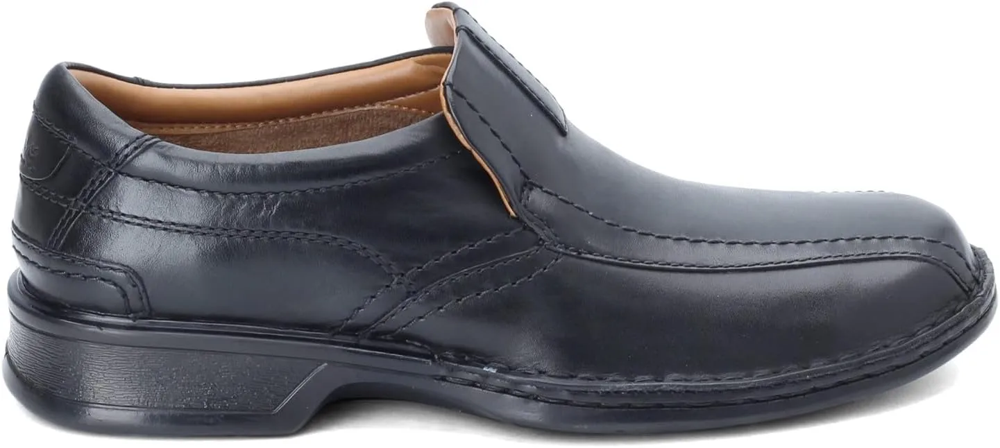
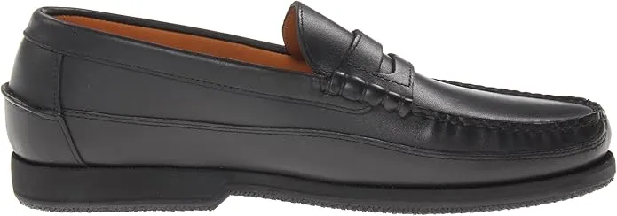
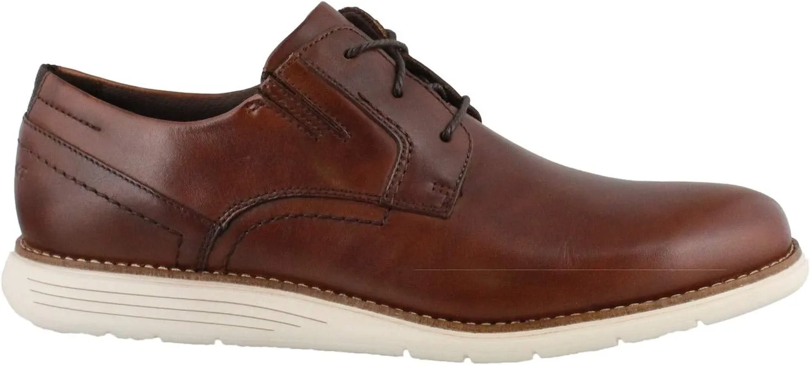
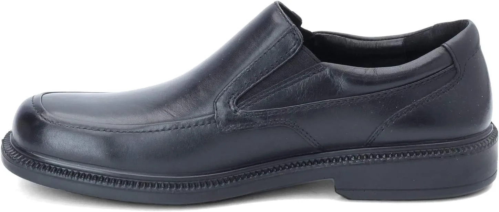
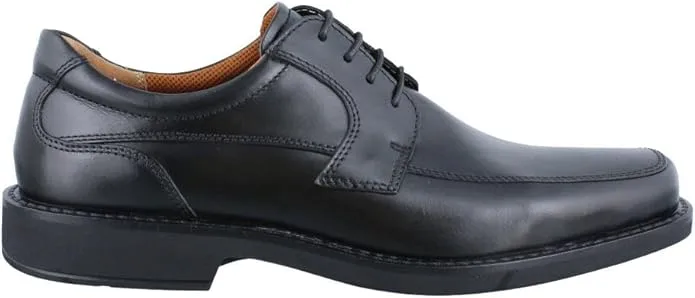
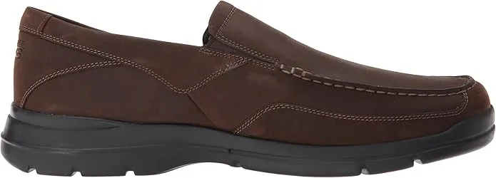
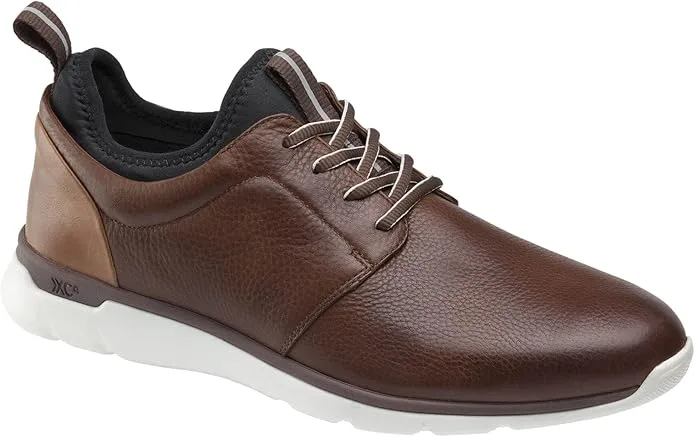
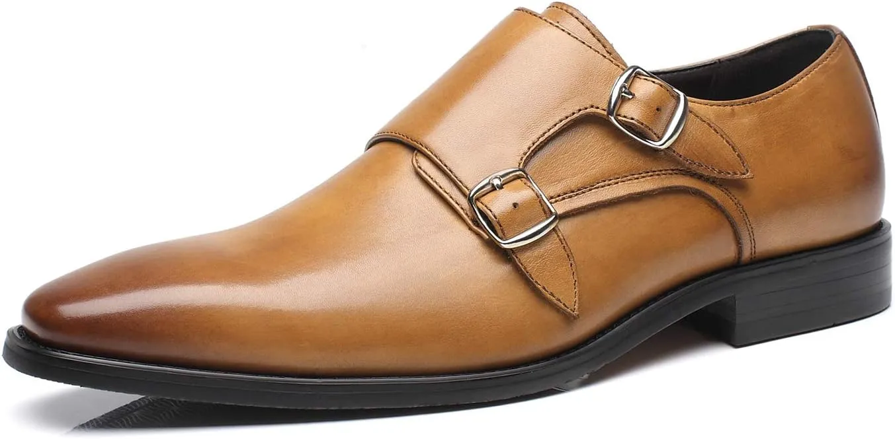
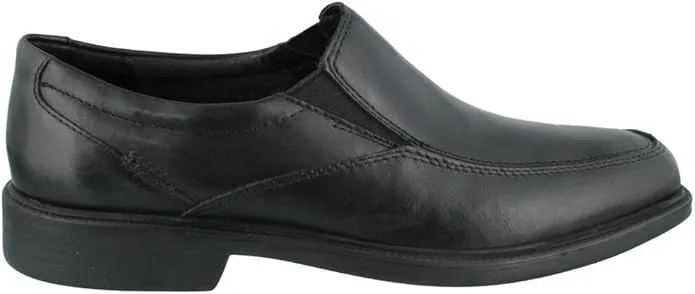

Top 10 Best Men’s Dress Shoes for Standing All Day in 2024
It is quite obvious that standing puts pressure directly on our vulnerable feet. Besides, when you have to stand for a whole day the feet demand to have some nicer quality shoes to put on. However, this becomes a bit more trickery when you have to wear only dress shoes.
Luckily, their best men’s dress shoes for standing all day are quite formal in appearance yet you get the best comfort from them. So, today we will especially discuss the men’s shoe that will bring professional solace to the feet with the sleek touch of style within. The brand and name we have included are quite well-known and people have given positive responses Shoes for Standing on Concrete to their footwear. Let’s get to know the insights.
-
#1
Beckett
Simonon Dean
Talking about comfort and style, this Beckett Simonon Dean Oxford Shoe is our first pick in today’s article. Its quality material and feet-friendly manufacturing style have become much popular among professional men. Due to its high-quality and suave look, you can count on it. The premium leather casts the business impression. The sole provides better traction than any other. The perfect shoe provides you a snug feel in every footstep. Its CustomCork™ insole does a lot to cater skin fit in a comfortable way. Its all-weather sole works best in a challenging situation.
-
#2
Clarks Men’s

Escalade StepClarks shoe for the formal dress code. It is considered the best men’s dress shoes for standing all day. So, if you have got a job where you have to be on your toes keep reading the features.
First of all, it features the extra comforting sole with the rubber made outer sole. It brings flexibility to the feet and you feel your walking like a gliding experience. It’s leather manufacturing exterior and synthetic sole go very well for a dressing clad. Besides, the leather uppers offer you the easy to clean option which you’ll definitely like. If in case you get something spilled on your shoe or having had a muddy walk, a single-handed wipe can save your Supportive House Shoes and its appearance. Its non-marking sole has been designed to allow you superb traction on the sleek floor and even on bumpy rough terrains. -
#3
Mephisto Men’s Cap Vert Slip-on
When we want a shoe for standing longer times, the first and foremost priory is the ultimate comfort. However many shoes lack comfort and excel in appearance. To cater to that, this Mephisto men’s’ slip-on shoe is here to prove the aforementioned as a cliché. Its fine and suave leather exterior lets you have the best wearing time.
Moreover, this slip-on features soft-air technology to maintain body weight and distribute it well. The removable insole is another noticeable point that will grab your attention. You can insert your preferable insole if you want to. Besides, the removable insole allows you to keep the interior of the shoe hygienic by changing the sole from time to time. -
#4
Rockport Men’s Total Motion Dress Cap Toe Oxford
If you talk about this Rockport Men’s Total Motion Dress Cap Toe Oxford, you will be pleased to know its quality concerns. First of all, the padded collar with softness within gives the solace feeling and avoids the rashes. The TPU shaped stability plate certainly makes sure traction while walking and flexibility.
Its softness acts like a counselor for painful joints. The synthetic sole and leather uppers are quite durable as well. Its removable EVA midsole make certain to reduce the shocks and sudden jerks. In addition to that, the low-top arc support means you can stand and walk with no strain on the vulnerable joins of your feet. Not only does it keep the strain off your feet and around but it also helps to provide relief on your shin and knees. -
#5
Hush Puppies Men’s Leverage Slip-On
An uncomfortable shoe for extended times of wearing can make you hate your job. Besides, men who have to dress in a formal way can’t find a middle way to wear something like a sneaker. But why choose an uncomfortable dress shoe when you have this Leverage slip-on by Hush Puppies.
This is a leather shoe with a rubber outsole. The quality rubber doesn’t let you fall in case of the slippery and wet floor. Meanwhile, the upper acts as a relaxant of your soft feet. The EVA embedded midsole allows you to get the utmost pleasure when you walk speedily. Its heel measures 1’’ inches. For a swift walk with the assurance of traction and friction under control, this slip-on is highly recommended. -
#6
Ecco Seattle
Make your prolonged standing exciting and fun with this Ecco Seattle formal slip-on shoe. It’s laceless all-black outlook certainly cast the formal yet up-to-date impression. Moreover, its comforting outsole features a rubber that is quite resilient in the walking session. The uppers of this shoe feature 100% quality leather that works best in all conditions. This heel of this shoe has been embedded with resilient rubber. Besides, the insole can be replaced by an Ortholite insole.
Due to enough padding and comfort soles, many of the users and buyers have claimed its perfect fitting. The snug way to hold the feet for longer standing times makes you comfortable at the end of the day. Besides, the padding and insole have been set in such a way that doesn’t make this shoe puffy or tumid in any way. -
#7
Rockport Men’s Eberdon Loafer
This is the best shoe that will make you feel as you walk on cloud nine! The formal look and the decent appearance of this shoe is a sure way to let you wear it on various occasions. Similar to the aforementioned shoes this one has also been made with 100% fine quality leather. The rubber sole is there to provide you the fuller traction, even on the shiny slippery flooring. The upper is pretty much easy to clean due to its leather made look. Besides, you just have to wipe the uppers if in case you have something spilled on it.
While wearing dress shoes, fresh air is the main concern that men lack. Thankfully, its interior has been designed with a breathable mesh that effectively takes care of the feet health. Furthermore, the mesh keeps the feet cool and dry in sweaty conditions. One other factor that this shoe excels in that it has shock absorption technology within. -
#8
Johnston & Murphy XC4 Elkins Wingtip
End your search for the best dress shoe with this Johnston & Murphy XC4 Elkins Wingtip shoe. This has been designed with waterproof DNA cushioning and adjustable fitting. This dress shoe has a very elegant appearance with a brown tint. Its seam-sealed construction is repellant towards the water and moist. Hence, you can wear them on the gooey and misty floors. Besides, the quality of made soles is always a concern while you have to stand for continuous hours.
Furthermore, its sheepskin mesh lining is best for proper breathability. Due to the ventilation, your feet remain dry and cool all day long. This also promotes hygiene and keeps the bacteria off your feet. The stability and constancy in the sole of a dress is always appreciated especially by men who have got a standing job.s -
#9
La Milano Men’s Double Monk
Nobody would disagree with the fact that prolonging the activity of doing something is not only boring but also brings discomfort along with it. And when it comes to standing, only a rightly chosen shoe with enhanced comfort can save you from it! No doubt, this shoe has a quite official impression and readily falls into the category of dress footwear. Its sleek and smooth polished exterior is best for considering in the formal condition. The overall build of this shoe has been made with professional-grade leather and a synthetic lining.
The sole with stacked heels never fails to provide you with the utmost comfort. The classic cap toe design and the comforting slip-on design have traction like that of a running shoe. Moreover, the double most strap and block heel is pretty much comforting. Its stylish approach is what allows you to confidently wear this one in various formal situations. The affordability and chic style has become the first priority to notice in this shoe. -
#10
Bostonian Men’s Mendon Dress Slip-On
Lastly, this Bostonian Men’s Mendon Slip-on shoe is good in many ways. First of all, its appearance is formal and works well in semi-formal situations as well. Besides, the availability of black and brown does verify that aforementioned point. Its slight heel makes it instantly up-to-date and gives a boost to the high. The leather made design and comfort liners makes the standing times most comforting.
Furthermore, the EVA sole with the shock liners has been inserted to make sure you walk swiftly and do not get the hurting toes or joints. The impact and jerk will not hurt you anymore. Its padded collar, resilient and spongy cushioning and footbed give your feet all along with the relaxation.